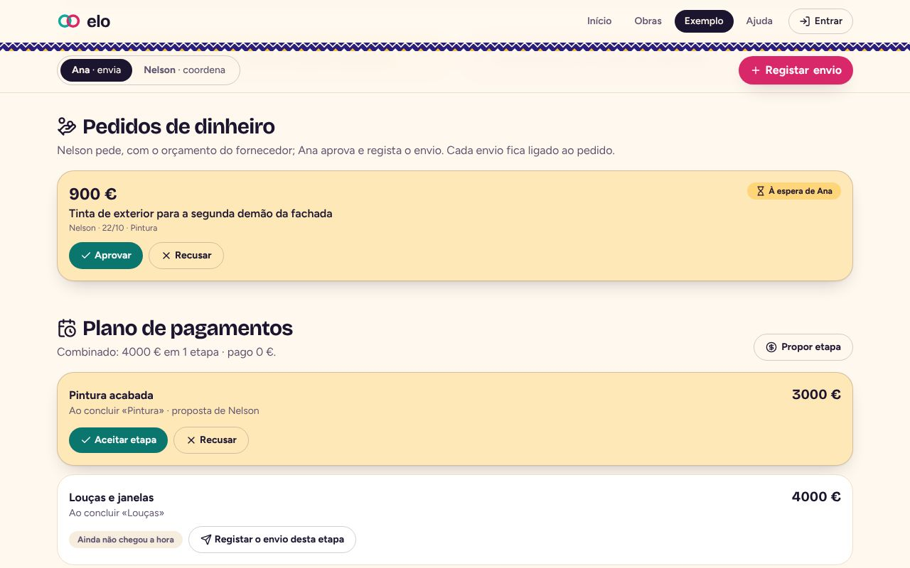
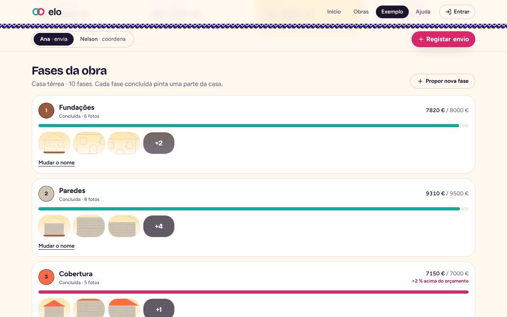
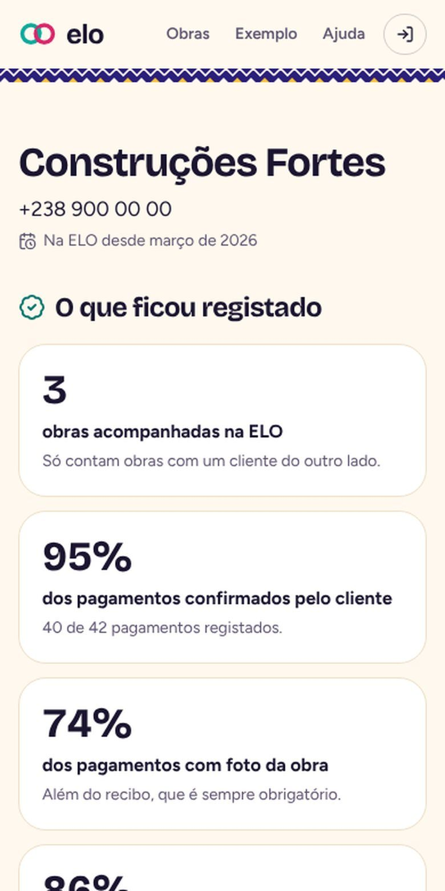
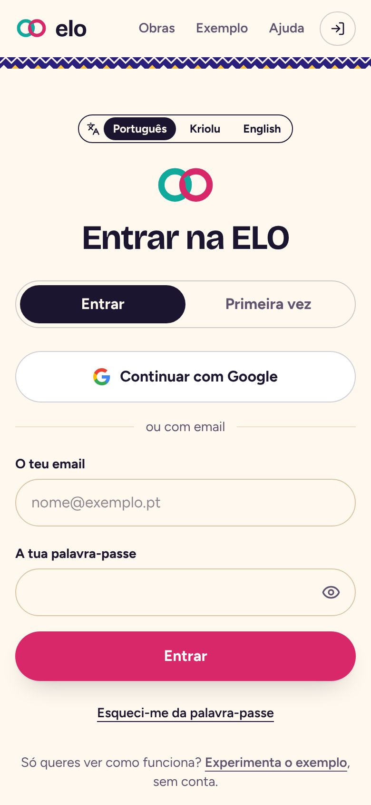

Porque nasceu
Construir à distância não devia custar a confiança de uma família
Em Cabo Verde e na diáspora, quase toda a gente conhece uma história assim: alguém emigrado envia dinheiro para construir casa na terra, um familiar coordena a obra, e a distância vai deixando dúvidas.
Dinheiro enviado sem se saber onde foi parar. Casas que, na hora de as conhecer, não têm as cores nem as louças combinadas. E quem coordenou na terra, mesmo com todos os recibos guardados, acusado injustamente.
Há quem deixe a obra a meio com medo de que corra mal. Eu própria quero um dia começar projetos em Cabo Verde e sinto esse receio. A ELO nasceu para que quem está longe e quem está na terra vejam exatamente o mesmo, desde o primeiro dia.
O que faz
Uma obra partilhada, com regras que nenhum dos lados contorna
Cada funcionalidade responde a uma desconfiança concreta. Quem envia, quem coordena e a pessoa de confiança entram na mesma obra e veem a mesma informação.
Para quem envia
Saldo claro
Quanto foi enviado, gasto, quanto está em caixa e quanto falta, em euros e em escudos, com a paridade fixa.
Pedidos de dinheiro
Quem coordena pede, com o orçamento do fornecedor. Quem envia aprova ou recusa com um motivo, e o envio fica ligado ao pedido.
«Nelson pediu dinheiro: 900 €.»
Pagamentos por etapas
O plano de pagamentos é combinado entre os dois. Quando uma fase acaba, chega o aviso: está na hora da etapa.
Fases com prova
Uma fase só fica concluída com fotos e com o aceite de quem envia. A casa ganha cor nessa altura.
Para quem coordena na terra
Cada pagamento com prova
O recibo é obrigatório e a foto mostra a data em que foi tirada. Se o mesmo recibo aparecer duas vezes, a app avisa.
Nada se apaga
Um erro corrige-se com uma nova entrada, ligada à original e à vista dos dois. Ninguém pode ser acusado de esconder nada.
Funciona com rede fraca
Sem rede, o pagamento fica guardado no telemóvel e é enviado sozinho quando a rede volta, sem duplicar.
Modo empreiteiro
Um painel com o que espera por si em cada obra, o logótipo da empresa e uma ficha pública com números reais: pagamentos confirmados, fases aceites à primeira. Não são estrelas nem opiniões.
Para a família inteira
Pessoa de confiança na terra
Um familiar ou engenheiro que não mexe em dinheiro: quando uma fase acaba, vai ver e deixa o seu parecer, que quem envia lê antes de aceitar.
«Tio Zé foi ver: tem dúvidas.»
Mudanças só por acordo
O orçamento, o plano, as cores e as fases não se mudam sozinhos: propõe-se a mudança e o outro lado aceita ou recusa.
Documentos e planta
Licença, escritura, contratos e faturas, com versões. A app avisa 30 dias, 7 dias e no dia em que a licença caduca.
Avisos no telemóvel
Sem abrir a app: um envio novo, um pedido, uma fase acabada, uma resposta.
Três línguas
Português, Kriolu e inglês. O convite por WhatsApp vai na língua de quem o recebe.
Os seus dados
Entrar com o Google ou por email, política de privacidade simples e apagar a conta na própria app.
A assinatura
A casa que ganha cor
Quatro tipos de casa, cada um com o seu desenho. Cada fase concluída pinta uma parte: as fundações, as paredes, o telhado, a pintura com a cor escolhida e, no fim, a buganvília. O que falta aparece em traço de planta.
Uma cara de Cabo Verde
O pano di terra, as casas coloridas, o sol e a buganvília. «Bon dia», «Boa tardi» e «Boa noti» conforme a hora.
Ecrãs
Como se vê








A obra «Casa Sodade», a Ana, o Nelson, o Tio Zé e a «Construções Fortes» são dados de exemplo.
Por dentro
Do primeiro envio à casa entregue
O que acontece numa obra acompanhada pela ELO.
- Diáspora · quem envia
Criar a obra e convidar
Escolhe o tipo de casa, as fases e o orçamento, e envia o convite por WhatsApp a quem coordena e à pessoa de confiança.
- Cabo Verde · quem coordena
Pedir dinheiro, com orçamento
Pede o valor de que precisa, com o orçamento do fornecedor. Quem envia aprova e regista o envio, feito pelo banco de sempre.
- Cabo Verde · quem coordena
Registar cada pagamento
Com o recibo, uma foto da obra e a fase. Mesmo sem rede: o registo espera no telemóvel.
- Os dois lados
Confirmar o que o outro registou
Quem envia confirma os pagamentos; quem coordena confirma que o dinheiro chegou. Cada lado recebe um aviso no telemóvel.
- Pessoa de confiança
Ir ver a fase acabada
Quem coordena pede para concluir a fase, com fotos. A pessoa de confiança vai à obra e deixa o seu parecer.
- Diáspora · quem envia
Aceitar, e a casa ganha cor
Com as fotos e o parecer, aceita ou diz o que falta. Ao aceitar, a casa pinta mais uma parte e chega a hora da etapa de pagamento combinada.
Como foi feito
Tecnologias
React, TanStack Start, TypeScript e Tailwind · Supabase (PostgreSQL) · Web Push, pg_net e pg_cron · service worker e IndexedDB para rede fraca · testes com Vitest, Playwright e axe.
Decisões
O que decidi e porquê
Escolhas feitas para a ELO ser útil, segura e reconhecível.
Uma app de remessas teria de mexer em dinheiro, e isso exige licenças bancárias.
A ELO não toca no dinheiro: regista, organiza e mostra. Continua-se a enviar pelo banco de sempre.
Regras que só existem no ecrã podem ser contornadas.
As regras estão na base de dados e foram testadas contra tentativas de as quebrar: 149 verificações, todas a passar.
Um registo que se pode apagar não protege ninguém.
Nada se apaga. Um erro corrige-se com uma nova entrada, ligada à original.
Uma foto antiga ou um recibo usado duas vezes enganam facilmente.
A app lê a data em que a foto foi tirada e guarda uma impressão digital da imagem, para avisar quando o mesmo recibo aparece duas vezes.
Na obra, no interior das ilhas, a rede falha.
O registo fica no telemóvel e é enviado quando a rede volta. Cada registo leva o seu identificador desde o início, por isso enviá-lo duas vezes não o duplica.
Estrelas e opiniões sobre empreiteiros são fáceis de falsificar.
A ficha mostra números calculados pela base de dados, só com dados suficientes e sem mostrar clientes nem valores.
Uma barra de percentagem diz pouco a quem está longe.
Criei a casa que ganha cor: num relance vê-se o que está feito e o que falta.
A primeira versão parecia pesada: contornos grossos e sombras pretas.
Refinei o visual: linhas finas, sombras suaves e letras menos carregadas, mantendo as cores de Cabo Verde.
Em números
A ELO em números
Com franqueza
Limites atuais
- Ainda não foi usada numa obra real do princípio ao fim.
- O Kriolu foi escrito na variante de Santiago e ainda precisa de ser revisto por falantes nativos.
- O painel da obra ainda está só em português; a entrada, o convite e a página inicial já estão nas três línguas.
- A ficha do empreiteiro diz o que conta, mas não consegue provar quem é o cliente do outro lado.
A seguir
Próximos passos
- Testar com famílias e empreiteiros numa obra a decorrer.
- O painel da obra em Kriolu e em inglês.
- Um plano pago para empreiteiros com várias obras.
O meu papel
Lenira Leitão
A ideia, o problema e as decisões são meus. Cresci a ouvir estas histórias e sei o que a distância faz às obras e à confiança. A app foi construída com ferramentas de IA, a partir dos meus pedidos e das minhas escolhas, e cada melhoria só entrou depois de eu a aprovar e de a ver no telemóvel.
Decidi que a ELO não mexe no dinheiro, para ser segura e possível; que as regras ficam na base de dados, para ninguém as contornar; e que tem uma cara de Cabo Verde, para que quem a abre se sinta em casa.